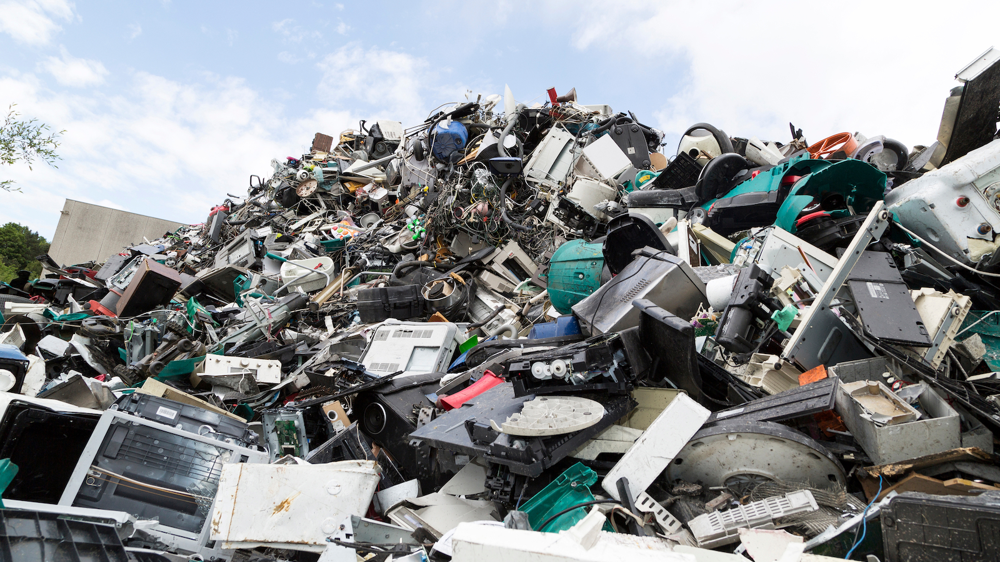

Who am I and why am I doing this?
Hello my name is Jake Stallbaumer. I am a student at Camas High School and I am hosting an e-waste tech drive for my senior project.
I chose to do this for my senior project because I am interested in pursuing a career with technology and computers.
What Is a Tech Drive?
It's simply like a food drive or clothing drive, ect, but for broken or unwanted technology. All you need to do is just
bring it to HP East parking lot on May 5th and find us
What is e-waste?
E-waste (electronic waste), is discarded electronic devices such as smartphones, computers, televisions, and other electronics. These devices often
contain hazardous materials like lead, mercury, and cadmium, which can pollute the environment when improperly disposed of. When e-waste is sent to
landfills or incinerated, it releases toxic chemicals that contaminate soil, water, and air, posing serious health risks to both wildlife and humans.

What can I donate?
Basically anything that runs on electricity! For example, computers, phones, tablets, monitors, computer peripherals like keyboards and mice, etc.
What isn't accepted?
Plastic media such as floppy disks, VHS tapes, zip disks, rewritable CD/DVDs Styrofoam Fluorescent light bulbs Non-rechargeable or leaking batteries (we do accept most rechargeable) Larger Li-ion batteries
Such as those from e-bikes, or mobility devices Copiers lacking the ability to print from a computer or network Compressed air items such as CO2 cartridges, aerosol cans, etc. Liquids such as cleaners, solvents
Inkjet refill kits, etc. Moldy, sticky or smelly items (volunteers will be handling your donation) Household appliances, including: Dehumidifiers Air conditioners Smoke detectors Microwave ovens
Biohazards / medical equipment: Items infested with insects or vermin droppings Blood testing supplies or equipment Items potentially contaminated with saliva and other bodily fluids (toothbrush heads etc.)
Furniture, including: Wooden pianos and organs Smartboards and whiteboards TV stands Desks
Who is FreeGeek?
FreeGeek is a Portland-based non-profit that recycles and refurbishes electronics. They organize tech drives to collect used electronics. These used electronics
are either refurbished or recycled. This cuts down on e-waste and allows them to provide a variety of technology to people in need in the Portland metro area.
If you would like to know more about them, click on the logo below!